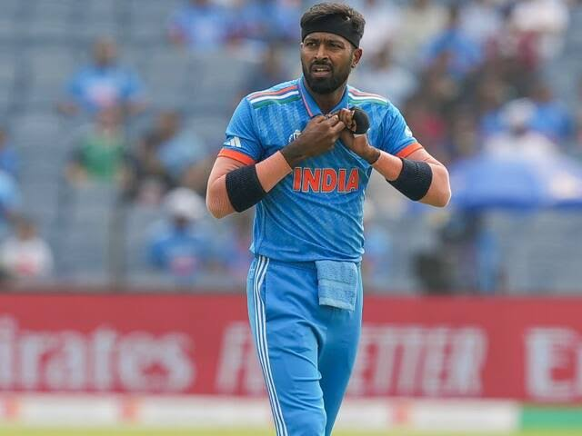

You are likely looking for the prominent Indian international cricketer Hardik Pandya, who is globally celebrated as a premier all-rounder in white-ball cricket and the captain of the Mumbai Indians in the Indian Premier League.Here is a quick breakdown of his key professional highlights:Career HighlightsTeam India: He is a key member of the Indian National Cricket team and was the vice-captain of the squad that won the historic 2024 T20 World Cup.Milestone: He is the first fast-bowling all-rounder in T20 Internationals to achieve the milestone of scoring 1,000 runs and taking 100 wickets.IPL: He captains the Mumbai Indians and previously led the Gujarat Titans to an IPL championship in their debut season.